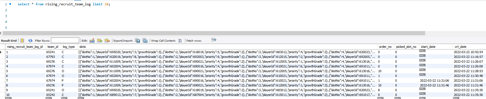
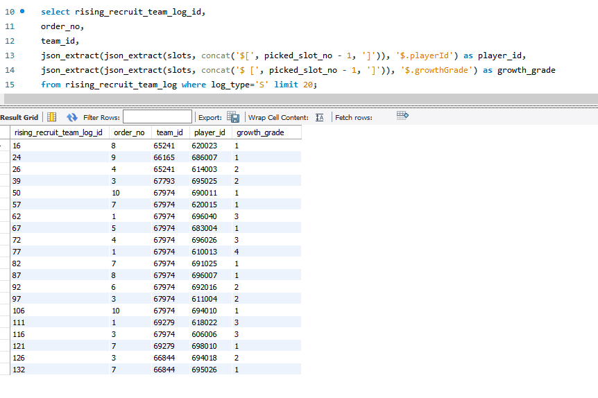

.

slots에 다음과 같이 10개의 동일한 key를 가진 json
[{“slotNo”:1,”playerId”:695020,”priority”:3,”growthGrade”:3},{“slotNo”:2,”playerId”:618019,”priority”:5,”growthGrade”:2},{“slotNo”:3,”playerId”:683012,”priority”:4,”growthGrade”:2},{“slotNo”:4,”playerId”:620023,”priority”:10,”growthGrade”:1},{“slotNo”:5,”playerId”:684014,”priority”:7,”growthGrade”:2},{“slotNo”:6,”playerId”:697004,”priority”:9,”growthGrade”:2},{“slotNo”:7,”playerId”:687020,”priority”:2,”growthGrade”:3},{“slotNo”:8,”playerId”:682005,”priority”:6,”growthGrade”:2},{“slotNo”:9,”playerId”:601015,”priority”:1,”growthGrade”:3},{“slotNo”:10,”playerId”:691024,”priority”:8,”growthGrade”:2}]
.
.
picked_slot_no에 따라 slots를 파싱하고 싶을 때 사용하는 쿼리
select rising_recruit_team_log_id,
order_no,team_id,
json_extract(json_extract(slots, concat('$[', picked_slot_no - 1, ']')), '$.playerId') as player_id,
json_extract(json_extract(slots, concat('$ [', picked_slot_no - 1, ']')), '$.growthGrade') as growth_grade
from rising_recruit_team_log where log_type='S' ;
.
결과

concat 함수로 ‘$[’ , picked_slot_no -1, ‘]’ 로 slots의 몇 번째를 파싱해올지 결정
그 후 key 값을 지정하여 다시 파싱하는 json_extract를 사용
picked_slot_no는 1~10까지고
json 위치는 0~9까지라서 -1 사용